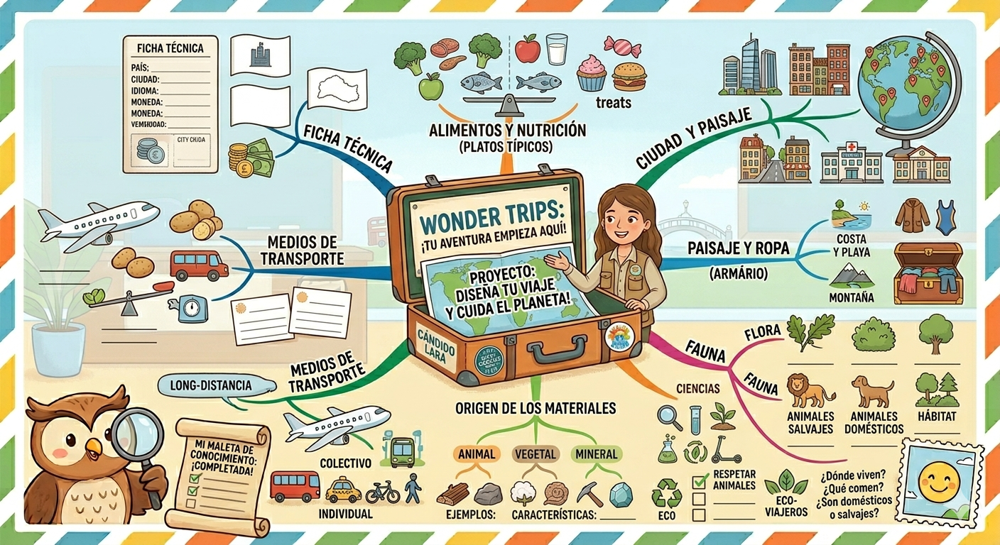

Let's get started!
¡Me han encantado esos destinos!
Es alucinante la de ciudades chulísimas que hay por todo el mundo... y ¡qué suerte tenerlas aquí todas reunidas!
Ahora que ya conocemos que ciudad nos ha tocado, vamos a conocer cómo tendremos que hacer nuestro trabajo.
Deberemos crear una MALETA VIAJERA en cuyo interior se encuentra la información sobre la ciudad que nos ha tocado, cumpliendo todos los apartados que os pido...
📋 1. La Ficha Técnica del Destino
Lo primero que verá el viajero al abrir la maleta:
- Nombre de la ciudad:
- País donde está:
- Continente:
- Idioma oficial: (¿Cómo se dice hola allí?)
- Moneda: (¿Con qué billetes o monedas se paga?)
- Bandera de la ciudad y Bandera del país: (¡Hay que dibujarlas y colorearlas muy bien!).
🥗 2. El Menú Viajero (Platos Típicos)
A todo el mundo le encanta comer cuando viaja. Debéis investigar:
- Qué platos son los más famosos de esa ciudad.
- ¿Qué ingredientes llevan? 🍅🥩🥦
- ¿Son saludables o no? (Recordad lo que hemos aprendido en clase sobre la comida sana).
- ¡Obligatorio incluir dibujos súper apetitosos de la comida!
🏙️ 3. ¿Cómo es la Ciudad?
Vais a convertiros en fotógrafos y observadores. Mirando imágenes de vuestra ciudad, contadnos:
- ¿Tiene un barrio antiguo con historia o es una ciudad súper moderna con rascacielos?
- ¿Cómo son las casas? ¿Hay bloques de pisos altos o casitas unifamiliares?
- ¿Cómo son sus calles? ¿Tienen carril bici para pasear sin contaminar? 🚲
- ¿Qué edificios importantes hay? (¿Hemos visto la biblioteca, el hospital, colegios...?). Menciona 3 de ellos.
⛰️ 4. El Paisaje y el Armario (Ropa)
- ¿Dónde está construida la ciudad? ¿En la montaña, en una gran llanura o al lado de la costa (mar)?
- ¿Hay agua cerca? Buscad si tiene ríos, lagos, embalses o mares.
- Súper importante para la maleta: ¿Qué ropa debo meter en la maleta según la estación del año? (¿Hace falta abrigo polar o bañador y gorra? ❄️☀️).
🌿 5. Flora (Las Plantas de la zona)
Buscad 3 plantas o árboles que crezcan de forma natural allí:
- Dibujadlas señalando sus partes (raíz, tallo/tronco, hojas, flores).
- Explicad qué utilidad tienen: ¿nos dan alimentos, madera, sombra, o sirven para hacer materiales?
🦊 6. Fauna (Los Animales de la zona)
Buscad 3 animales típicos de ese lugar y haced su ficha de Sciences:
- ¿Dónde viven?
- ¿Cómo tienen el cuerpo? (¿Piel desnuda, plumas, escamas o pelo?)
- ¿Qué comen? (¿Carnívoros, herbívoros u omnívoros?)
- ¿Cómo nacen? (¿De la tripa de su madre -vivíparos- o de un huevo -ovíparos-?)
- ¿Son animales domésticos o salvajes?
🧱 7. Materiales de la Zona
En esa parte del mundo se usan cosas diferentes para construir o fabricar objetos. Buscad 5 materiales que usen mucho allí y clasificadlos según su origen:
- Origen animal (como la lana o el cuero).
- Origen de la tierra/mineral (como las rocas, el barro o el metal).
- Origen de las plantas/vegetal (como la madera o el algodón).
🚯 8. ¡Eco-Viajeros! Proteger la Zona
Como somos científicos y cuidamos el planeta, tenemos que escribir una lista de consejos para los clientes:
- ¿Cómo debemos portarnos para no ensuciar la ciudad?
- ¿Cómo ayudamos a proteger la naturaleza y los monumentos de ese lugar? 💚
✈️ 9. Medios de Transporte
Por último, el viaje tiene que empezar y moverse:
- ¿Cómo llegamos desde España hasta esa ciudad? (¿En avión, en barco, en tren...?)
- Una vez allí, ¿cómo nos movemos? Decidnos transportes colectivos (autobús, metro) e individuales (bici, taxi, caminar).
🚀 ¡Manos a la obra, supergrupos! Id repartiendo las tareas en vuestro equipo de 5. ¿Quién se encarga de los animales? ¿Quién dibuja las banderas? ¡A rellenar esa maleta de conocimiento!
Mind map
